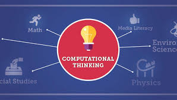

Some time before I joined the Hidden Genius Project, I realized that I was spending an excessive amount of time playing video games, and I thought to myself "How can I turn this passion for playing video games into money" At almost perfect timing The Hidden Genius had poped up. I took this as the perfect oppurtunity to turn my passion into a way to make money, instead of just playing the games, I wanted to be the person that makes them, and Hidden Genius could teach me how to do that. There are many different parts to video game design and I myself can't do them all so I decided to choose one. Choosing one wasn't the easiest thing either, I had to pick the aspect of video games that I care about the most. during my thinking process I thought of how I was going to jump start my freelance then an idea flowed into my head. Why don't I create an application where other video game developers can work with people who want to create video games but don't have the level of coding skill to do so.
Study Of Computers And Computer Systems Including How Computers Work & How Computers Are Made Computer Science Is A Combination Of: Problem Solving Skills Creative Thinking Skills Logical Thinking Skills Critical Thinking Skills Computational Thinking Skills *
Human knowledge, that involves tools, materials, and systems to solve problems Including products and processes used to make our daily lives easier Tech is used to accomplish various tasks in our daily lives Tech extends our abilities, making (us) the most crucial part of any technological system (Tech Is NOTHING without us) Trends that happen in Tech are inspired by youth (make your own ideas and $$$) Use Tech to make changes and advance your own community
Computers are everywhere in our daily lives [phones, game systems etc.] Computers are tools that make our lives easier Computers help us solve problems, help us stay organized, etc. Computers help us accomplish things (freelance, school work, network, etc.) Abundance of computers but they are not being utilized to the full potential Computer can be used as a toy or it can be utilized to make money Computers are great tools for making money (businessmen, freelancer, etc.) Computers help us do research to stay on top of our fame Very important to take care of our computers [limited in our communities]
The Digital Divide is the separation between those who have ready access to computers and the Internet, and those who do not. The "digital divide" refers to the fact that certain parts of the population have substantially better opportunities to benefit from the new economy than other parts of the population Digital Divide prevents certain categories of people— those from low-income households, senior citizens, single-parent children, the undereducated, minorities, and residents of rural areas — from receiving adequate access to the wide variety of resources offered by computer technology. There are 3 types of “digital divide”: Economic Divide Usability Divide Empowerment Divide
The process of approaching a problem in a systematic manner and creating and expressing a solution such that it can be carried out by a computer. But you don't need to be a computer scientist to think like a computer scientist!
Logical thinking in computer science is to take time and evaluate the issue in the code or the program, and find out the best possible way to fix it. It may not be the coolest way, but it’s the smartest and most logical idea to fix it.
Creative thinking in computer science is to be able to come up with new bright ideas to be able to use those ideas to further your exploration through computer science. It can also be used to come up with ideas to solve problems, and to come up with ideas to make cool applications.
Critical thinking in computer science is kind of the same thing as logical thinking in computer science, to figure out the absolute best way possible to figure out the issue to a problem, maybe in code or an application. It does not matter whether its the more fun way or the coolest way, it just has to be the smartest and most logical way to solve the issue.
GUI that every user sees
Holds things based on applications
Allows you to connect to the internet
Holds applications and files that are open
Allows you to get to the applications real fast
Use it to find any file directory that you need
Additional information about a file that is added to the end of the file name
Documents that hold content
Containers that hold files or other information
Something that displays the applications content.
A system of files
Folder that holds all other folders
A software that runs on your computer
A software program that allows a user to locate, access, and display web pages.
An electronic or electromechanical hardware device that is used for entering data into, and displaying or printing data from, a computer or a computing system.
A folder is a storage space where many files can be placed into groups and organize the computer.
A unit of storage capable of holding a single character.
Computational thinking allows us to take a complex problem, understand what the problem is and develop possible solutions. We can then present these solutions in a way that a computer, a human, or both, can understand There are four key techniques to computational thinking
The process of designing and building an executable computer program for accomplishing a specific computing task.
Decomposition involves breaking down a complex problem or system into smaller parts that are more manageable and easier to understand. The smaller parts can then be examined and solved, or designed individually, as they are simpler to work with If a problem is not decomposed, it is much harder to solve.
When we decompose a complex problem we often find patterns among the smaller problems we create. The patterns are similarities or characteristics that some of the problems share Pattern recognition is one of the four cornerstones of Computer Science. It involves finding the similarities or patterns among small, decomposed problems that can help us solve more complex problems more efficiently.
Abstraction is the process of filtering out – ignoring - the characteristics of patterns that we don't need in order to concentrate on those that we do. It is also the filtering out of specific details. From this we create a representation (idea) of what we are trying to solve Abstraction allows us to create a general idea of what the problem is and how to solve it. The process instructs us to remove all specific detail, and any patterns that will not help us solve our problem. This helps us form our idea of the problem. This idea is known as a ‘model’.
An algorithm is a plan, a set of step-by-step instructions to solve a problem. If you can tie shoelaces, make a cup of tea, get dressed or prepare a meal then you already know how to follow an algorithm.
Pseudocode is not a programming language, it is a simple way of describing a set of instructions that does not have to use specific syntax. Writing in pseudocode is similar to writing in a programming language. Each step of the algorithm is written on a line of its own in sequence. Usually, instructions are written in uppercase, variables in lowercase and messages in sentence case. In pseudocode, INPUT asks a question. OUTPUT prints a message on screen.
A flowchart is a diagram that represents a set of instructions. Flowcharts normally use standard symbols to represent the different instructions. There are few real rules about the level of detail needed in a flowchart. Sometimes flowcharts are broken down into many steps to provide a lot of detail about exactly what is happening. Sometimes they are simplified so that a number of steps occur in just one step. \
Evaluation: Evaluation is the process that allows us to make sure our solution does the job it has been designed to do and to think about how it could be improved.
Sequence: identifying a series of steps for a task
a question is asked, and depending on the answer, the program takes one of two courses of action, after which the program moves on to the next event.
the recurrence of actions or events.
Fixing errors within your algorithm
A set of integrated devices that input, output, process, and store data and information
Computer hardware is the collection of physical parts of a computer system.
A set of instructions and its associated documentations that tells a computer what to do or how to perform a task.
A computer device, such as a keyboard or printer, that is not part of the essential computer
The sequence of events in processing information, which includes (1) input, (2) processing, (3) storage and (4) output. The input stage can be further broken down into acquisition, data entry and validation.
An input device sends information to a computer system for processing, and an output device reproduces or displays the results of that processing.
The enclosure that contains most of the components of a personal computer
Connects all the internal components of a computer, such as CPU and memory, to the motherboard.
A computer port is a connection point or interface between a computer and an external or internal device.
The abbreviation for central processing unit. Sometimes referred to simply as the central processor, but more commonly called processor, the CPU is the brains of the computer where most calculations take place.
An acronym for random access memory, a type of computer memory that can be accessed randomly; that is, any byte of memory can be accessed without touching the preceding bytes.
A high-capacity, self-contained storage device containing a read-write mechanism plus one or more hard disks, inside a sealed unit.
A set of computer instructions in firmware that control input and output operations.
System software is a type of computer program that is designed to run a computer's hardware and application programs.
The software that supports a computer's basic functions, such as scheduling tasks, executing applications, and controlling peripherals.
Any program, or group of programs, that is designed for the end user.
Computers operate in binary, meaning they store data and perform calculations using only zeros and ones.
a numeral system that uses 16 symbols.
a small piece, part, or quantity of something.
four binary digits or half of an eight-bit byte
a group of binary digits or bits (usually eight) operated on as a unit.
a decimal unit prefix in the metric system denoting multiplication by one thousand
a unit prefix in metric systems of units denoting a factor of one million It has the unit symbol M.
a prefix used with the metric system that stands for 1,000,000,000 (billion) or 109.
a unit of information equal to one million million (1012) or, strictly, 240 bytes.
&& is the "AND" control operator.
|| is the opposite: it will evaluate the right side only if the left side exit status is non-zero (i.e. false).
A function is a subroutine, a code block that implements a set of operations, a "black box" that performs a specified task.
A variable in bash can contain a number, a character, a string of characters.
Anything with quotes around it ("")
a distributed version-control system for tracking changes in source code during software development.
Here are some of the reflections i've done for summer 1
In leadership today we read the quote that talked about how if you aren’t inspired by the people in your circle then you aren’t in a circle you’re in a cage. The quote means that if the people you decide to surround yourself with don’t inspire you to become better than they are further trapping your true self from coming out and you will forever be forced to follow in others footsteps instead of branching off and making your own path to success. .
In leadership today we talked about how we feel at hgp. We talked about all the opportunities that we get from HG and that we should use them to our advantage. We also talked about how we sacrifice our summer break to come here and get work done, but we will be the people that change lives and make our own businesses.
Today we talked about the importance of having trust in each other and how important it is in our communities. We talked about how trust is shown in our actions for example, how if you do things that make you untrustworthy people won’t trust in you.
These are some of the module reflections I have done for summer 1.
In module 2 we went more into depth in computational thinking. We learned all of the comp thinking terms which are, Decomposition, pattern recognition, abstraction, and algorithms. We also talked about how we can apply these things to our everyday life.
In module 3 we learned about the insides of a computer and all the different components. We learned the difference in Hardware and Software. We also took the different components from computers and related them to the human body.
In module 4 we learned about the digital parts of the computer and how those things work, for example, we learned about, desktops, menu bars, Newtwork icons, docs, launch pad, finder, etc